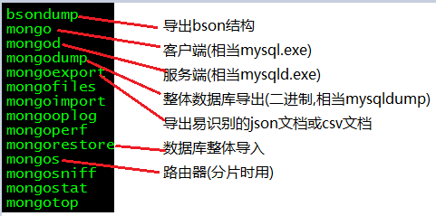

mongodb
memcached
redis kv数据库(key/value)
mongodb 文档数据库,存储的是文档(Bson->json的二进制化).
特点:内部执行引擎为JS解释器, 把文档存储成bson结构,在查询时,转换为JS对象,并可以通过熟悉的js语法来操作.
mongo和传统型数据库相比,最大的不同:
传统型数据库: 结构化数据, 定好了表结构后,每一行的内容,必是符合表结构的,就是说--列的个数,类型都一样.
mongo文档型数据库: 表下的每篇文档,都可以有自己独特的结构(json对象都可以有自己独特的属性和值)
思路: 如果有电影, 影评, 影评的回复, 回复的打分
在传统型数据库中, 至少要4张表, 关联度非常复杂.
在文档数据库中,通过1篇文档,即可完成. 体现出文档型数据库的反范式化.
{
fiim:’天龙八部’
comment:[
{content:’王家卫的电影风格’,
reply:[‘支持’,’好’]
}
]
}
mongodb的安装
2: 解压文件
3: 不用编译,本身就是编译后的二进制可执行文件.

4: 启动mongod服务
./bin/mongod --dbpath /path/to/database --logpath /path/to/log --fork --port 27017
参数解释:
--dbpath 数据存储目录
--logpath 日志存储目录
--port 运行端口(默认27017)
--fork 后台进程运行
5: mongodb非常的占磁盘空间, 刚启动后要占3-4G左右,
如果你用虚拟机练习,可能空间不够,导致无法启动.
可以用 --smallfiles 选项来启动,
将会占用较小空间 400M左右.
1: mongo入门命令
1.1: show dbs 查看当前的数据库
1.2 use databaseName 选库
1.2 show tables/collections 查看当前库下的collection
1.3 如何创建库?
Mongodb的库是隐式创建,你可以use 一个不存在的库
然后在该库下创建collection,即可创建库
1.4 db.createCollection(‘collectionName’)
创建collection
1.5 collection允许隐式创建
Db.collectionName.insert(document);
1.6 db.collectionName.drop() ,
删除collection
1.7 db.dropDatabase();
删除database
基本操作增删改查
增: insert
介绍: mongodb存储的是文档,. 文档是json格式的对象.
语法: db.collectionName.isnert(document);
1: 增加单篇文档
Db.collectionName.insert({title:’nice day’});
2: 增加单个文档,并指定_id
Db.collectionName.insert({_id:8,age:78,name:’lisi’});
- 增加多个文档
db.collectionName.insert(
[
{time:'friday',study:'mongodb'},
{_id:9,gender:'male',name:'QQ'}
]
)
删:remove
语法: db.collection.remove(查询表达式, 选项);
选项是指 {justOne:true/false},是否只删一行, 默认为false
注意
1: 查询表达式依然是个json对象
2: 查询表达式匹配的行,将被删掉.
3: 如果不写查询表达式,collections中的所有文档将被删掉.
例1: db.stu.remove({sn:’001’});
删除stu表中 sn属性值为’001’的文档
例2: db.stu.remove({gender:’m’,true});
删除stu表中gender属性为m的文档,只删除1行.
改 update操作
改谁? --- 查询表达式
改成什么样? -- 新值 或 赋值表达式
操作选项 ----- 可选参数
语法: db.collection.update(查询表达式,新值,选项);
例:
db.news.update({name:'QQ'},{name:'MSN'});
是指选中news表中,name值为QQ的文档,并把其文档值改为{name:’MSN’},
结果: 文档中的其他列也不见了,改后只有_id和name列了.
即--新文档直接替换了旧文档,而不是修改
如果是想修改文档的某列,可以用$set关键字
db.collectionName.update(query,{$set:{name:’QQ’}})
修改时的赋值表达式
$set 修改某列的值
$unset 删除某个列
$rename 重命名某个列
$inc 增长某个列
$setOnInsert 当upsert为true时,并且发生了insert操作时,可以补充的字段.
Option的作用:
{upsert:true/false,multi:true/false}
Upsert---是指没有匹配的行,则直接插入该行.(和mysql中的replace一样)
例:db.stu.update({name:'wuyong'},{$set:{name:'junshiwuyong'}},{upsert:true});
如果有name=’wuyong’的文档,将被修改
如果没有,将添加此新文档
例:
db.news.update({_id:99},{x:123,y:234},{upsert:true});
没有_id=99的文档被修改,因此直接插入该文档
multi: 是指修改多行(即使查询表达式命中多行,默认也只改1行,如果想改多行,可以用此选项)
例:
db.news.update({age:21},{$set:{age:22}},{multi:true});
则把news中所有age=21的文档,都修改
查: find, findOne
语法: db.collection.find(查询表达式,查询的列);
Db.collections.find(表达式,{列1:1,列2:1});
例1:db.stu.find()
查询所有文档 所有内容
例2: db.stu.find({},{gendre:1})
查询所有文档,的gender属性 (_id属性默认总是查出来)
例3: db.stu.find({},{gender:1, _id:0})
查询所有文档的gender属性,且不查询_id属性
例3: db.stu.find({gender:’male’},{name:1,_id:0});
查询所有gender属性值为male的文档中的name属性
查询表达式:
1: 最简单的查询表达式
{filed:value} ,是指查询field列的值为value的文档
2: $ne --- != 查询表达式
{field:{$nq:value}}
作用--查filed列的值 不等于 value 的文档
3: $nin --> not in
4: $all
语法: {field:{$all:[v1,v2..]}}
是指取出 field列是一个数组,且至少包含 v1,v2值
5: $exists
语法: {field:{$exists:1}}
作用: 查询出含有field字段的文档
6: $nor,
{$nor,[条件1,条件2]}
是指 所有条件都不满足的文档为真返回
7:用正则表达式查询 以”诺基亚”开头的商品
例:db.goods.find({goods_name:/诺基亚.*/},{goods_name:1});
8: 用$where表达式来查询
例: db.goods.find({$where:'this.cat_id != 3 && this.cat_id != 11'});
注意: 用$where查询时, mongodb是把bson结构的二进制数据转换为json结构的对象,
然后比较对象的属性是否满足表达式.
速度较慢
Update时可用的操作符
例:
->db.user.insert({name:'lisi',age:12,sex:'male',height:123,area:'haidian'});
->db.user.update({name:'lisi'},{$set:{area:'chaoyang'},$unset:{height:1},$inc:{age:1},$rename:{sex:'gender'}});
> db.user.find();
{ "_id" : ObjectId("51fc01c4f5de93e1f2856e33"), "age" : 13, "area" : "chaoyang", "gender" : "male", "name" : "lisi" }
$setOnInsert ->相当于mysql中的列的默认值
游标操作 cursor
游标是什么\?
通俗的说,游标不是查询结果,而是查询的返回资源,或者接口.
通过这个接口,你可以逐条读取.
就像php中的fopen打开文件,得到一个资源一样, 通过资源,可以一行一行的读文件.
声明游标:
var cursor = db.collectioName.find(query,projection);
Cursor.hasNext() ,判断游标是否已经取到尽头
Cursor. Next() , 取出游标的下1个单元
用while来循环游标
> var mycursor = db.bar.find({_id:{$lte:5}})
> while(mycursor.hasNext()) {
... printjson(mycursor.next());
... }
例:
// 声明游标
var cursor = db.goods.find();
// 循环游标
for(var doc=true;cursor.hasNext();) { printjson(cursor.next());}
也可以简写:
for(var cursor=db.goods.find(), doc=true;cursor.hasNext();) { printjson(cursor.next());}
游标还有一个迭代函数,允许我们自定义回调函数来逐个处理每个单元.
cursor.forEach(回调函数);
例:
> var gettitle = function(obj) {print(obj.goods_name)}
> var cursor = db.goods.find();
> cursor.forEach(gettitle);
游标在分页中的应用
比如查到10000行,跳过100页,取10行.
一般地,我们假设每页N行, 当前是page页
就需要跳过前 (page-1)*N 行, 再取N行, 在mysql中, limit offset,N来实现
在mongo中,用skip(), limit()函数来实现的
如 var mycursor = db.bar.find().skip(9995);
则是查询结果中,跳过前9995行
查询第901页,每页10条
则是 var mytcursor = db.bar.find().skip(9000).limit(10);
通过cursor一次性得到所有数据, 并返回数组.
例:
>var cursor = db.goods.find();
> printjson(cursor.toArray()); //看到所有行
> printjson(cursor.toArray()[2]); //看到第2行
注意: 不要随意使用toArray()
原因: 会把所有的行立即以对象形式组织在内存里.
可以在取出少数几行时,用此功能.
索引创建
1:索引提高查询速度,降低写入速度,权衡常用的查询字段,不必在太多列上建索引
- 在mongodb中,索引可以按字段升序/降序来创建,便于排序
- 默认是用btree来组织索引文件,2.4版本以后,也允许建立hash索引.
查看查询计划
db.find(query).explain();
"cursor" : "BasicCursor", ----说明没有索引发挥作用
"nscannedObjects" : 1000 ---理论上要扫描多少行
cursor" : "BtreeCursor sn_1", 用到的btree索引
常用命令:
查看当前索引状态: db.collection.getIndexes();
创建普通的单列索引:db.collection.ensureIndex({field:1/-1}); 1是升续 2是降续
删除单个索引
db.collection.dropIndex({filed:1/-1});
一下删除所有索引
db.collection.dropIndexes();
创建多列索引 db.collection.ensureIndex({field1:1/-1, field2:1/-1});
创建子文档索引
db.collection.ensureIndex({filed.subfield:1/-1});
创建唯一索引:
db.collection.ensureIndex({filed.subfield:1/-1}, {unique:true});
创建稀疏索引:
稀疏索引的特点------如果针对field做索引,针对不含field列的文档,将不建立索引.
与之相对,普通索引,会把该文档的field列的值认为NULL,并建索引.
适宜于: 小部分文档含有某列时.
db.collection.ensureIndex({field:1/-1},{sparse:true});
> db.tea.find();
{ "_id" : ObjectId("5275f99b87437c610023597b"), "email" : "a@163.com" }
{ "_id" : ObjectId("5275f99e87437c610023597c"), "email" : "b@163.com" }
{ "_id" : ObjectId("5275f9e887437c610023597e"), "email" : "c@163.com" }
{ "_id" : ObjectId("5275fa3887437c6100235980") }
如上内容,最后一行没有email列,
如果分别加普通索引,和稀疏索引,
对于最后一行的email分别当成null 和 忽略最后一行来处理.
根据{email:null}来查询,前者能查到,而稀疏索引查不到最后一行.
创建哈希索引(2.4新增的)
哈希索引速度比普通索引快,但是,无能对范围查询进行优化.
适宜于---随机性强的散列
db.collection.ensureIndex({file:’hashed’});
重建索引
一个表经过很多次修改后,导致表的文件产生空洞,索引文件也如此.
可以通过索引的重建,减少索引文件碎片,并提高索引的效率.
类似mysql中的optimize table
db.collection.reIndex()
Mongodb导出与导入
1: 导入/导出可以操作的是本地的mongodb服务器,也可以是远程的.
所以,都有如下通用选项:
-h host 主机
--port port 端口
-u username 用户名
-p passwd 密码
2: mongoexport 导出json格式的文件
问: 导出哪个库,哪张表,哪几列,哪几行?
-d 库名
-c 表名
-f field1,field2...列名
-q 查询条件
-o 导出的文件名
-- csv 导出csv格式(便于和传统数据库交换数据)
例:
[root@localhost mongodb]# ./bin/mongoexport -d test -c news -o test.json
connected to: 127.0.0.1
exported 3 records
[root@localhost mongodb]# ls
bin dump GNU-AGPL-3.0 README test.json THIRD-PARTY-NOTICES
[root@localhost mongodb]# more test.json
{ "_id" : { "$oid" : "51fc59c9fecc28d8316cfc03" }, "title" : "aaaa" }
{ "_id" : { "$oid" : "51fcaa3c5eed52c903a91837" }, "title" : "today is sataday" }
{ "_id" : { "$oid" : "51fcaa445eed52c903a91838" }, "title" : "ok now" }
例2: 只导出goods_id,goods_name列
./bin/mongoexport -d test -c goods -f goods_id,goods_name -o goods.json
例3: 只导出价格低于1000元的行
./bin/mongoexport -d test -c goods -f goods_id,goods_name,shop_price -q ‘{shop_price:{$lt:200}}’ -o goods.json
注: _id列总是导出
Mongoimport 导入
-d 待导入的数据库
-c 待导入的表(不存在会自己创建)
--type csv/json(默认)
--file 备份文件路径
例1: 导入json
./bin/mongoimport -d test -c goods --file ./goodsall.json
例2: 导入csv
./bin/mongoimport -d test -c goods --type csv -f goods_id,goods_name --file ./goodsall.csv
./bin/mongoimport -d test -c goods --type csv --headline -f goods_id,goods_name --file ./goodsall.csv
mongodump 导出二进制bson结构的数据及其索引信息
-d 库名
-c 表名
-f field1,field2...列名
例:
mongodum -d test [-c 表名] 默认是导出到mongo下的dump目录
规律:
1:导出的文件放在以database命名的目录下
2: 每个表导出2个文件,分别是bson结构的数据文件, json的索引信息
3: 如果不声明表名, 导出所有的表
mongorestore 导入二进制文件
例:
./bin/mongorestore -d test --directoryperdb dump/test/ (mongodump时的备份目录)
二进制备份,不仅可以备份数据,还可以备份索引,
备份数据比较小.
mongodb的用户管理
注意:
A)在mongodb中,有一个admin数据库, 牵涉到服务器配置层面的操作,需要先切换到admin数据.
即 use admin , -->相当于进入超级用户管理模式.
B)mongo的用户是以数据库为单位来建立的, 每个数据库有自己的管理员.
C) 我们在设置用户时,需要先在admin数据库下建立管理员---这个管理员登陆后,相当于超级管理员.
0: 查看用户
1: 添加用户
命令:db.addUser();
简单参数: db.addUser(用户名,密码,是否只读)
注意: 添加用户后,我们再次退出并登陆,发现依然可以直接读数据库?
原因: mongodb服务器启动时, 默认不是需要认证的.
要让用户生效, 需要启动服务器时,就指定 --auth 选项.
这样, 操作时,就需要认证了.
例:
1: 添加用户
> use admin
> db.addUser(‘sa’,’sa’,false);
2: 认证
> use test
> db.auth(用户名,密码);
3: 修改用户密码
> use test
> db.changeUserPassword(用户名, 新密码);
3:删除用户
> use test
> db.removeUser(用户名);
注: 如果需要给用户添加更多的权限,可以用json结构来传递用户参数
例:
> use test
>db.addUser({user:'guan',pwd:'111111',roles:['readWrite,dbAdmin']});
replication set复制集
replicattion set 多台服务器维护相同的数据副本,提高服务器的可用性.
primary
secondary
secondary
Replication set 设置全过程
0:创建目录
mkdir -p /data/r0 /data/r1 /data/r2
1:启动3个实例,且声明实例属于某复制集
./bin/mongod --port 27017 --dbpath /data/r0 --smallfiles --replSet rsa --fork --logpath /var/log/mongo17.log
./bin/mongod --port 27018 --dbpath /data/r1 --smallfiles --replSet rsa --fork --logpath /var/log/mongo18.log
./bin/mongod --port 27019 --dbpath /data/r2 --smallfiles --replSet rsa --fork --logpath /var/log/mongo19.log
2:配置
rsconf = {
_id:'rsa',
members:
[
{_id:0,
host:'192.168.1.201:27017'
}
]
}
3: 根据配置做初始化
rs.initiate(rsconf);
4: 添加节点
rs.add('192.168.1.201:27018');
rs.add('192.168.1.201:27019');
5:查看状态
rs.status();
6:删除节点
rs.remove('192.168.1.201:27019');
7:主节点插入数据
>use test
>db.user.insert({uid:1,name:'lily'});
8:连接secondary查询同步情况
./bin/mongo --port 27019
>use test
>show tables
rsa:SECONDARY> show tables;
Sat Aug 17 16:03:55.786 JavaScript execution failed: error: { "$err" : "not master and slaveOk=false", "code" : 13435 }
8.1 出现上述错误,是因为slave默认不许读写
>rs.slaveOk();
>show tables
#看到与primary 一致的数据
分片

1:在3台独立服务器上,分别运行 27017,27018,27019实例, 互为副本集,形成3套repl set
2: 在3台服务器上,各配置config server, 运行27020端口上
3: 配置mongos
./bin/mongos --port 30000 \
--dbconfig 192.168.1.201:27020,192.168.1.202:27020,192.168.1.203:27020
4:连接路由器
./bin/mongo --port 30000
5: 添加repl set为片
>sh.addShard(‘192.168.1.201:27017’);
>sh.addShard(‘192.168.1.203:27017’);
>sh.addShard(‘192.168.1.203:27017’);
6: 添加待分片的库
>sh.enableSharding(databaseName);
7: 添加待分片的表
>sh.shardCollection(‘dbName.collectionName’,{field:1});
Field是collection的一个字段,系统将会利用filed的值,来计算应该分到哪一个片上.
这个filed叫”片键”, shard key
mongodb不是从单篇文档的级别,绝对平均的散落在各个片上,
而是N篇文档,形成一个块"chunk",
优先放在某个片上,
当这片上的chunk,比另一个片的chunk,区别比较大时, (>=3) ,会把本片上的chunk,移到另一个片上, 以chunk为单位,
维护片之间的数据均衡
问: 为什么插入了10万条数据,才2个chunk?
答: 说明chunk比较大(默认是64M)
在config数据库中,修改chunksize的值.
问: 既然优先往某个片上插入,当chunk失衡时,再移动chunk,
自然,随着数据的增多,shard的实例之间,有chunk来回移动的现象,这将带来什么问题?
答: 服务器之间IO的增加,
接上问: 能否我定义一个规则, 某N条数据形成1个块,预告分配M个chunk,
M个chunk预告分配在不同片上.
以后的数据直接入各自预分配好的chunk,不再来回移动?
答: 能, 手动预先分片!
以shop.user表为例
1: sh.shardCollection(‘shop.user’,{userid:1}); //user表用userid做shard key
2: for(var i=1;i<=40;i++) { sh.splitAt('shop.user',{userid:i*1000}) } // 预先在1K 2K...40K这样的界限切好chunk(虽然chunk是空的), 这些chunk将会均匀移动到各片上.
3: 通过mongos添加user数据. 数据会添加到预先分配好的chunk上, chunk就不会来回移动了.
短网址项目开发准备
项目功能:
为已有网站生成统一的短网址.
如 新浪 t.cn http://t.cn/zQd5NPw
点击短网址 跳转到原始网站
攻关点:
0: 形如 d.cn/acF54V ---> 统一解析到固定页面上去.
解决: 在apache中用URL重写, 在nginx中, location
1: 如何生成短网址的参数 ,如 zQd5NPw
分析:
1: 短,
2: 为公众服务,储存的网址特别多.
1,2是相互矛盾的--短自然存储就少.
所以要合理的设计短网站的组成规律.
2: 如果跳转.
答:302跳转.
网址生成办法:
1:用 a-zA-Z0-9 ,,62位 ,
考虑成 62进制的数,
7位可以存储62^7, 约等于 (2^6)^7
约存储4万亿条数据
2: 链接编码看起来”无规律一些”
====> 10进制的URL的id,转换为62进制.
筹备内容:
1: 前端页面
2: mongodb的建模
库: info
表: url
文档的格式:
{_id:xxxx,sn:TrE4Q,oriurl:http://www.baidu.com, hits:0}
注: sn,oriurl,要加索引,且是唯一索引
3: 全局的序号生成器
库:info
表:globalsn
{_id:1,sn:0}
生成生网址
����ԭ��ַ
����
�����ɶ���ַ,��д��
Mongodb��ȥ
����ȫ�����к�
���ض���ַ
短网址项目移植到mongo集群
分片与副本集自动部署
Shard rsd
Shard rsb
D�ŷ�
IP:204
������
[27019]
[27018]
[27017]
B�ŷ�
IP:202
������
[27019]
[27018]
[27017]
A�ŷ� IP: 201
Mongos ,configdb
[PHP+nginx]
Mongodb 分片与chunk
问题---我们向mongos路由器,添加了10条数据,发现并没有均匀的分布在B,D两个片上, 而是都在B上.
原因: mongodb并不是按行的级别,在片上绝对的平均分配.
而是以块为单位,来各片上寻求平衡.
过程是这样的--------
1: 数据先往主片上添加,都放在一个chunk(块)里, 这个块达到一定大小(默认是64M), 再生成新块.
2: 新块仍然是主片上,
3: configdb判断主片上有2块,而其他片的chunk过少,则会自动移动chunk过去.
在大型系统中,chunk的自动移动,(后台balance程序控制的), 会加剧IO的压力.
----我们可以根据业务量,合适的推测数量的增长,对数据进行预先分片, pre-split
即手工分片,而不自动分片.
注意: 预先分片的collection得是空的
Use admin //切换到admin数据库,进行管理
db.runCommand({split:’database.collection’,middle:{_id:值}});
例:
db.runCommand({split:’shop.goods’,middle:{_id:10000}});
db.runCommand({split:’shop.goods’,middle:{_id:20000}});
....
db.runCommand({split:’shop.goods’,middle:{_id:120000}});
这样将会把
[0,10000]-->切成1个块chunk
(10000,20000]->切成一个块chunk.
....
(110000,120000]->切成一个块chunk.
,系统会预告生成这些空块,并在shard片之间达到平衡.
然后再插入数据,chunk不会再自动转移.
Mongodb的性能监测工具
Mongotop 观察N秒内,每个库上读写花费的时间

Mongostat

inserts 每秒插入
query 每秒查询
update 每秒更新
delete 每秒删除
getmore 每秒查询游标
command 每秒总命令
flushes 每秒同步次数
mapped mmap内存大小(M)
size 虚拟内存(M)
res 物理内存(M)
faults 取内存页面失败次数(要去swap调)
locked db 锁住某库的时间
idx miss 索引未命中率
qr 队列里读取命令
qw 队列里写入命令
ar 活动的读取命令
aw 活动的读取命令
netIn 接收的流量
netOut 发出的流量
conn 当前打开连接数
set 复制集名称
repl 在复制集中的名称
db.serverStatus();
例: http://127.0.0.1:28017
#查询每个栏目下的商品数量
{
key:{cat_id:1},
cond:{},
reduce:function(curr,result) {
result.cnt += 1;
},
initial:{cnt:0}
}
#查询每个栏目下价格高于50元的商品数量
{
key:{cat_id:1},
cond:{shop_price:{$gt:50}},
reduce:function(curr,result) {
result.cnt += 1;
},
initial:{cnt:0}
}
#每个栏目下的商品库存量 sum()操作
{
key:{cat_id:1},
cond:{},
reduce:function(curr,result) {
result.num += curr.goods_number;
},
initial:{num:0}
}
#查询每个栏目最贵的商品价格, max()操作
{
key:{cat_id:1},
cond:{},
reduce:function(curr , result) {
if(curr.shop_price > result.max) {
result.max = curr.shop_price;
}
},
initial:{max:0}
}
#同上,查询每个栏目下最便宜的商品价格,同学们自行完成
#查询每个栏目下商品的平均价格
{
key:{cat_id:1},
cond:{},
reduce:function(curr , result) {
result.cnt += 1;
result.sum += curr.shop_price;
},
initial:{sum:0,cnt:0},
finalize:function(result) {
result.avg = result.sum/result.cnt;
}
}
#查询每个栏目下的商品数量
db.collection.aggregate();
[
{$group:{_id:"$cat_id",total:{$sum:1}}}
]
#查询goods下有多少条商品,select count(*) from goods
[
{$group:{_id:null,total:{$sum:1}}}
]
#查询每个栏目下 价格大于50元的商品个数
[
{$match:{shop_price:{$gt:50}}},
{$group:{_id:"$cat_id",total:{$sum:1}}}
]
#查询每个栏目下 价格大于50元的商品个数
#并筛选出"满足条件的商品个数" 大于等于3的栏目
[
{$match:{shop_price:{$gt:50}}},
{$group:{_id:"$cat_id",total:{$sum:1}}},
{$match:{total:{$gte:3}}}
]
#查询每个栏目下的库存量
[
{$group:{_id:"$cat_id" , total:{$sum:"$goods_number"}}},
]
#查询每个栏目下的库存量,并按库存量排序
[
{$group:{_id:"$cat_id" , total:{$sum:"$goods_number"}}},
{$sort:{total:1}}
]
#查询每个栏目下的库存量,并按库存量排序
[
{$group:{_id:"$cat_id" , total:{$sum:"$goods_number"}}},
{$sort:{total:1}},
{$limit:3}
]
#查询每个栏目的商品平均价格,并按平均价格由高到低排序
[
{$group:{_id:"$cat_id" , avg:{$avg:"$shop_price"}}},
{$sort:{avg:-1}}
]
mapReduce 随着"大数据"概念而流行.
其实mapReduce的概念非常简单,
从功能上说,相当于RDBMS的 group 操作
mapReduce的真正强项在哪?
答:在于分布式,当数据非常大时,像google,有N多数据中心,
数据都不在地球的一端,用group力所不及.
group既然不支持分布式,单台服务器的运算能力必然是有限的.
而mapRecuce支持分布式,支持大量的服务器同时工作,
用蛮力来统计.
mapRecuce的工作过程:
map-->映射
reduce->归约
map: 先是把属于同一个组的数据,映射到一个数组上.cat_id-3 [23,2,6,7]
reduce: 把数组(同一组)的数据,进行运算.
用mapReduce计算每个栏目的库存总量
map函数
var map = function() {
emit(this.cat_id,this.goods_number);
}
var reduce = function(cat_id,numbers) {
return Array.sum(numbers);
}
db.goods.mapReduce(map,reduce,{out:'res'});
#用mapReduce计算每个栏目下商品的平均价格
var map = function() {
emit(this.cat_id,this.shop_price);
}
var reduce = function(cat_id,values) {
return Array.avg(values);
}
db.goods.mapReduce(map,reduce,{out:'res'});
作业:
完成2-3个mongod组成的shard集群, 把地震数据分布到各节点上,
把中国的区域按10个经度10个纬度为一组, 约为30块,
并用mapReduce计算地震数据,
统计每一组上,每月的地震次数, 及地震级别
分析出结果,把地震高发区用偏红颜色标注, 低发区,用偏绿色标注,
分析中国的地震带.